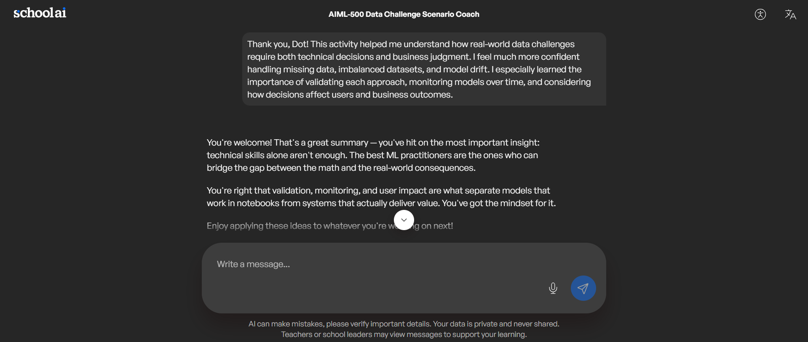

Description
A focused AI copilot supporting requirements clarification, meeting summaries, user stories, process analysis, stakeholder communication, and structured decision support.
Professional Portfolio
Business Analyst · AI & Machine Learning Graduate Student
I combine business analysis, artificial intelligence, and data analytics to design practical, user-centered solutions that improve communication, documentation, collaboration, and decision-making.
About Me
I am a Business Analyst with experience supporting enterprise IT projects through stakeholder collaboration, requirements analysis, system integrations, and AI-enabled business solutions.
I am currently pursuing a master's degree in Artificial Intelligence and Machine Learning, where I continue to strengthen my expertise in AI, data analytics, prompt engineering, responsible AI, and digital transformation.
I translate complex business challenges into clear, practical solutions by combining structured business analysis with emerging AI capabilities. My approach emphasizes usability, transparency, and human oversight.
Artifact 1
Enterprise Business Analyst Copilot
BridgeAI is an AI-powered assistant created to support Business Analysts throughout the software development lifecycle. This authentic course artifact shows how generative AI can improve communication, documentation, requirements work, and decision support while maintaining responsible human oversight.
A focused AI copilot supporting requirements clarification, meeting summaries, user stories, process analysis, stakeholder communication, and structured decision support.
To investigate how AI can reduce repetitive Business Analysis work, improve documentation quality, and strengthen stakeholder communication.
BridgeAI demonstrates how AI can augment professional judgment, save time, improve consistency, and help teams communicate more effectively.
Identified recurring challenges experienced by Business Analysts.
Created a problem statement focused on productivity and documentation.
Explored AI-supported Business Analysis workflows.
Built and configured a custom Business Analyst assistant.
Compared model outputs and refined prompts through iteration.
This artifact combines my Business Analysis experience with AI solution design. Its unique strength is the emphasis on user needs, transparency, and human accountability rather than automation alone.
The project applies foundational AI/ML competencies including prompt engineering, model comparison, iterative testing, responsible AI, and human-AI collaboration in a realistic professional setting.
Course materials on Design Thinking, responsible AI, prompt engineering, and model evaluation informed the development of this artifact.
Artifact 2
AI Approaches in Cybersecurity Operations
This authentic course presentation investigates how traditional machine learning and deep learning support modern cybersecurity operations. It was selected as Artifact 2 because it demonstrates a different skill set from BridgeAI: industry research, technical comparison, ethical analysis, teamwork, and evidence-based recommendations.
The presentation compares Cloudflare's CatBoost-based bot detection with Microsoft Security Copilot's transformer-based approach and evaluates cost, explainability, privacy, regulatory, and security trade-offs.
To analyze where machine learning and deep learning add value in cybersecurity and recommend responsible adoption strategies based on the problem, data, risk, and organizational context.
The artifact helps technology leaders distinguish when interpretable traditional ML is sufficient and when deep learning is justified by complex, unstructured signals.
Reviewed cybersecurity data types, operational challenges, AI applications, and scholarly sources.
Selected Cloudflare and Microsoft Security Copilot as contrasting real-world examples.
Compared algorithms, data characteristics, inference needs, explainability, and business impact.
Examined privacy, automation bias, model risk, regulation, and responsible adoption.
Organized the analysis into a clear visual narrative and manually verified content and citations.
This artifact translates technical AI concepts into practical guidance for security leaders. It connects model selection with cost, explainability, regulatory compliance, and organizational risk rather than treating AI performance as the only decision factor.
The project demonstrates meaningful application of foundational AI/ML skills through model comparison, algorithm selection, responsible AI, data privacy, cybersecurity analysis, research synthesis, and professional communication.
As the Industry Analyst, I researched the cybersecurity industry, identified key data types and operational challenges, and connected those findings to AI and machine learning applications. I also helped ensure the presentation was understandable to both technical and business audiences.
Open or download the complete 13-page presentation, including case studies, comparison, ethical reflection, strategic recommendation, and references.
Artifact 3
Connecting classroom knowledge with practical enterprise applications
Curricular Practical Training connects academic learning with practical workplace experience. This group-created infographic explains how knowledge from Artificial Intelligence, Data Analytics, Business Analysis, critical thinking, and research can be applied to real-world enterprise environments through Generative AI.
This infographic was developed collaboratively by our group to represent CPT as a bridge between classroom learning and workplace impact. It presents four major areas where Generative AI and large language models can support professional work: automation and cloud deployment, enterprise business analysis and IT projects, data modeling and architecture diagrams, and operations optimization.
It also highlights outcomes such as faster problem-solving, increased productivity, improved communication, stronger collaboration, data-driven decisions, and AI-enabled innovation.
The objective of this group project was to visually demonstrate how academic knowledge can be transferred into professional practice through CPT. We aimed to create an easy-to-understand resource showing how Generative AI can enhance business processes, technical work, collaboration, and decision-making.
Discussed the relationship between academic learning, CPT, Generative AI, and workplace responsibilities.
Identified relevant academic competencies, practical AI applications, and enterprise outcomes.
Organized the information into a bridge-themed infographic representing the transition from classroom learning to workplace impact.
Each group member contributed ideas, reviewed the content, and helped refine the wording and visual organization.
The completed infographic was reviewed collaboratively for clarity, accuracy, consistency, and visual appeal.
This infographic gives students and professionals a practical way to understand how academic knowledge and Generative AI can be applied within enterprise environments. It simplifies complex concepts and demonstrates how AI can support business analysis, automation, technical documentation, system design, operational improvement, and decision-making.
The artifact’s unique value is its bridge-based visual structure, which clearly connects academic learning on one side with workplace impact on the other. It combines technical applications, professional competencies, and business outcomes in one visual resource, making the relationship between CPT and enterprise innovation easy to understand.
This artifact is relevant to my academic and professional development because it reflects how I apply knowledge from my Artificial Intelligence and Data Analytics program to real-world business and technology challenges. It also demonstrates skills in teamwork, business analysis, visual communication, process improvement, technical documentation, and cross-functional collaboration.
Course materials, class discussions, and group research related to Curricular Practical Training, Generative AI, large language models, and enterprise applications.
Artifact 4
Missing Data, Class Imbalance, and Model Drift
This artifact documents my work through three realistic machine learning scenarios involving missing data, imbalanced datasets, and data and concept drift. It demonstrates how I identify a problem, compare possible solutions, explain my reasoning, and evaluate how technical decisions may affect accuracy, fairness, customer experience, and business outcomes.
Apply machine learning concepts to realistic data challenges and recommend solutions that balance model quality, responsible decision-making, and organizational needs.
Instructors, employers, Business Analysts, Data Analysts, and professionals interested in practical and responsible machine learning.
The artifact shows my ability to move beyond definitions and apply machine learning concepts to data quality, model evaluation, fairness, monitoring, and business decision-making.
I examined missing “year built” values that were concentrated in older neighborhoods. Because deleting records or using one overall average could introduce bias, I proposed context-aware approaches such as K-nearest neighbors or neighborhood-based median imputation. I would validate the selected method by temporarily hiding known values, generating estimates, and comparing them with the actual values.
In a dataset where only 0.5% of transactions were fraudulent, I recognized that 99.5% accuracy was misleading because the model classified every transaction as legitimate. I recommended stratified sampling, class weighting, careful resampling, threshold adjustment, and evaluation using precision, recall, F1-score, confusion matrices, and precision-recall curves. I also considered the cost of missed fraud and false alerts.
I evaluated declining recommendation performance and distinguished data drift from concept drift. Possible causes included expansion into new countries, viral music trends, and a revised onboarding process. I recommended segmenting performance by country and user type, retraining with recent data, continuously monitoring model quality, and using A/B testing before broad deployment.
I learned that high accuracy alone does not make a model effective, especially with highly imbalanced data. I also learned that missingness patterns may contain meaningful information and that production models require ongoing monitoring because user behavior, populations, and business conditions can change.
The AI coach encouraged me to make my recommendations more specific. I refined the missing-data response by naming K-nearest neighbors imputation and explaining a validation method. I also expanded the fraud scenario by connecting threshold selection to investigation capacity, financial risk, customer experience, and transaction type. These revisions made my reasoning clearer and more useful to a professional audience.

I selected this activity because it demonstrates my ability to apply machine learning concepts to realistic situations rather than only explain them theoretically. I customized the artifact for a professional audience by organizing it into objective, process, tools, skills, evidence, and value sections instead of displaying the full chatbot conversation. This activity strengthened my understanding that machine learning requires thoughtful data preparation, appropriate evaluation measures, continuous monitoring, and decisions that balance technical performance with real-world impact.
Artifact 5
Healthcare, Financial Services, and Marketing & Revenue Technology
AI is increasingly becoming part of everyday business workflows rather than being used only for experimentation or content generation. For this project, I created a professional newsletter examining three recent commercial AI applications across healthcare, financial services, and marketing and revenue technology.
I selected this artifact because it demonstrates my ability to research current AI developments, understand how new technologies are being applied in real organizations, and translate technical information into practical business insights for a general professional audience.
The objective of this project was to analyze how commercial AI applications are changing business processes and decision-making across three different industries. I also wanted to look beyond what each AI product does technically and understand where it creates business value, what role people continue to play, and how these applications may evolve in the future.
Business leaders, Business Analysts, technology professionals, AI/ML students, and other professionals interested in understanding practical commercial uses of artificial intelligence without requiring a highly technical background.
This artifact demonstrates my ability to connect emerging AI technology with real business processes and decisions. Instead of focusing only on features or technical capabilities, I evaluated how each application changes the way work is performed, where it may create efficiency, and where human judgment and accountability remain important.
I analyzed Relatient's expansion of Dash Voice AI, which can turn patient calls involving clinical, billing, and other requests into structured tasks that are routed into existing healthcare workflows.
My analysis focused on how this reduces manual voicemail handling and administrative handoffs while allowing nurses, billing teams, and other professionals to retain responsibility for the actual decision or response.
I examined Suryoday Small Finance Bank's collaboration with Kyndryl to introduce agentic AI into banking processes such as account onboarding, customer support, suspicious-transaction investigations, and loan underwriting.
This example helped me explore how AI agents can coordinate information across multi-step business processes while still requiring governance, human approval, auditability, and escalation for higher-risk decisions.
I analyzed 6sense's new AI capabilities that bring buyer intent, predictive account information, campaign performance, and other customer signals directly into AI-assisted workflows.
This example was particularly relevant to me because of my experience working with CRM systems, campaign data, integrations, and customer information. It reinforced something I see frequently in my own work: an automated recommendation is only as useful as the quality and availability of the data behind it.
The unique value of this artifact is its cross-industry business perspective. Rather than describing AI only from a technical viewpoint, the newsletter compares how three different organizations use AI to address operational needs while emphasizing data quality, governance, human oversight, and measurable business value.
This project helped me understand that the business value of AI does not come simply from adding an AI tool to an existing process. The strongest applications redesign parts of the workflow so that AI handles repetitive or information-heavy activities while people remain responsible for judgment, exceptions, and accountability.
I also noticed a common pattern across all three industries: AI is moving from simply answering questions toward participating directly in workflows. At the same time, the examples reinforced that reliable data, governance, and human oversight become even more important as AI is given greater responsibility.
At the time I finalized this artifact, peer feedback from Workshop Five had not yet been provided. Rather than representing feedback that I did not receive, I reviewed the artifact myself against the course rubric and the structure of my existing portfolio.
As part of that review, I refined the newsletter to make the business impact clearer, separated each example into commercial application, business-process impact, decision-making impact, and future potential, and added a visual summary so that readers could quickly compare the three industries. I also reviewed the language and formatting to make the artifact more accessible to a professional audience rather than presenting it as a traditional academic paper.
If additional peer feedback becomes available, I will review the recommendations and incorporate changes that strengthen the clarity and professional value of the portfolio.
This artifact is relevant to my academic and professional development because it connects emerging AI capabilities with business analysis, CRM platforms, campaign data, system integrations, workflow improvement, governance, and data-driven decision-making. The 6sense example is especially relevant because it demonstrates how AI can use current customer and campaign signals to support business decisions while still depending on reliable data and well-designed integrations.
View the completed AI at Work commercial AI newsletter, including the full analysis of healthcare, financial services, and marketing and revenue technology and the sources used to validate each commercial application.
I used ChatGPT to assist with researching recent commercial AI applications, organizing the newsletter, and improving clarity. I reviewed the original company sources and revised the content so that the analysis, professional connections, and conclusions reflect my own understanding.
I selected this project as my fifth artifact because it represents a different side of my AI/ML learning. Some of my earlier artifacts focus more on machine learning concepts, data challenges, cybersecurity, or designing AI solutions. This project shows my ability to step back and evaluate how AI is actually being adopted in business today.
What I found most valuable was looking at AI from both the technology and business perspectives. It was not enough to describe what each product could do. I had to think about what process was changing, how people would use the information, what decisions AI could support, and where human judgment still needed to remain.
The 6sense example felt especially relevant because it connects AI with CRM, campaign information, customer signals, and system integrations. Those are areas I already encounter in my work, so it helped me see more clearly how my Business Analyst experience can contribute to future AI initiatives.
This artifact also reflects how my thinking about AI has changed throughout the course. I am less interested now in asking whether AI can perform a task and more interested in asking whether it solves the right business problem, whether the underlying data can be trusted, how success will be measured, and what controls should remain around the technology.
Overall, this project strengthened my ability to translate emerging AI developments into clear business implications and reinforced the type of AI/ML professional I want to become: someone who can connect technology, data, people, and business needs in a practical and responsible way.
Skills
Contact